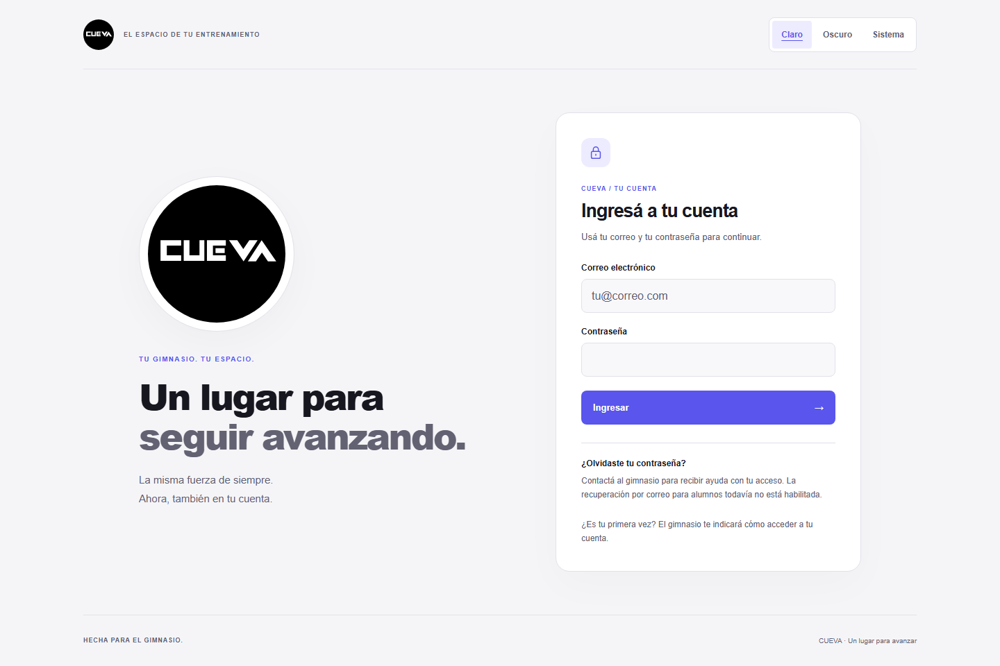
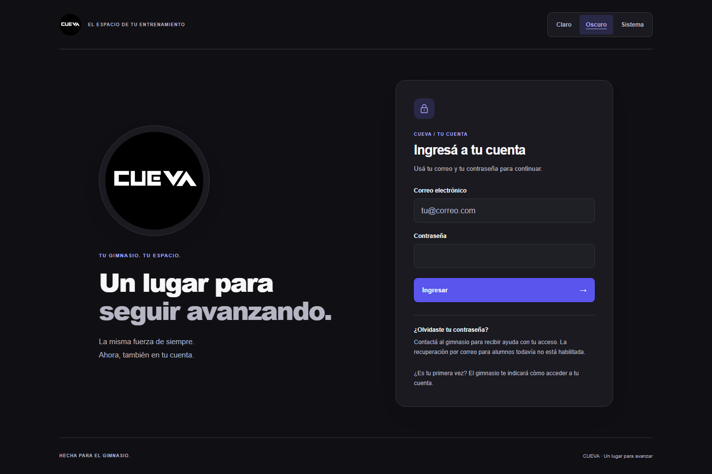
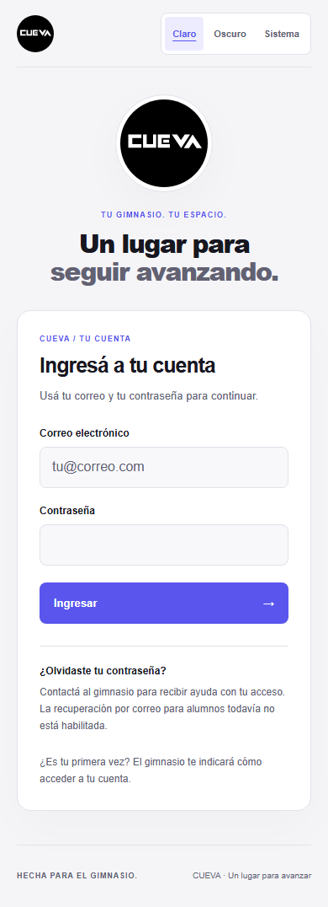
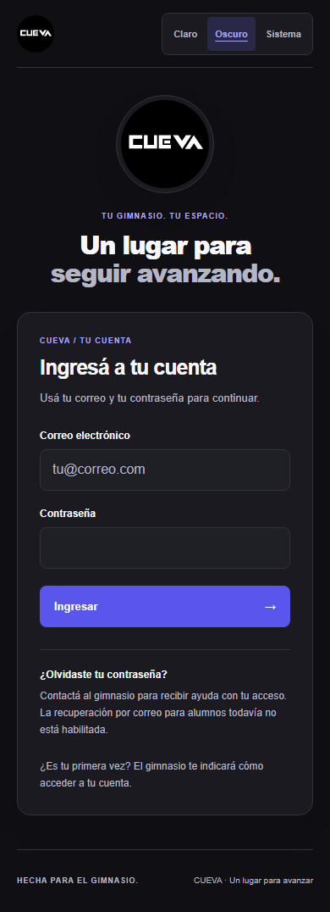

CUEVA-ACCESO-001 · REVIEW
UI real local con configuración sintética. Campos vacíos; no acredita sesión real ni disponibilidad alojada.




UI real local con configuración sintética. Campos vacíos; no acredita sesión real ni disponibilidad alojada.



